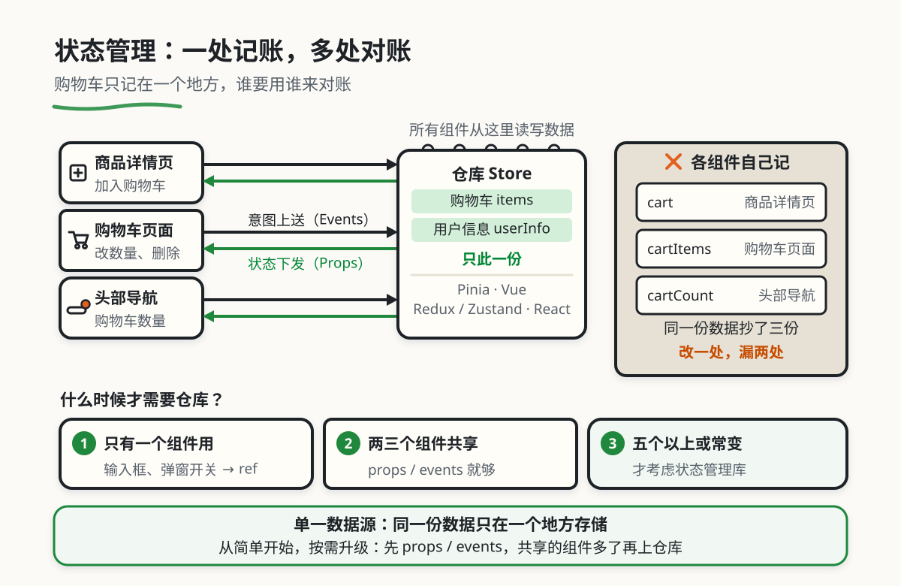

状态管理哲学
本章目录 · 1 节
状态管理原理
核心问题 当应用越来越大，组件之间该如何优雅地共享和同步数据？ 你可能会遇到这样的困境：用户在商品页添加了购物车，但头部的购物车数量没更新；两个不相关的组件需要同一份数据，却不知道该怎么传递。本章将带你从"混乱的数据传递"进化到"清晰的状态管理"。
1. 组件化与状态管理的动机
1.1 从小作坊到工厂：前端开发的演变
在正式开始之前，先问你一个问题：你有没有试过在厨房里做一顿大餐？
如果你只是给自己煮一碗面，那很简单——一个锅、一把面、一点调料，十秒钟搞定。但如果你要开一家餐厅，每天服务几百个顾客，就不能再"想做什么做什么"了。你需要标准化的菜谱、明确的分工、统一的采购流程，这样才能保证每道菜的质量稳定、出餐效率高。
前端开发也一样。一个人写小项目，代码随便放哪里都行。但当团队变大、项目变复杂后，就需要一套系统的方法来组织代码和管理数据。这就是组件化与状态管理要解决的问题。
🤔 什么是"组件"和"状态"？ 在继续之前，先解释两个核心术语：
组件（Component）：就像乐高积木，每个积木是一个独立的部分，有自己的形状、颜色、功能。你可以把多个积木拼在一起，搭建出复杂的城堡。在前端开发中，一个按钮、一个表单、一个导航栏，都可以是一个组件。
状态（State）：就是组件的"记忆"。比如一个按钮，它"记住"了自己是"禁用"还是"启用"状态；一个购物车组件，它"记住"了里面有哪些商品。状态会变化，而状态变化会触发界面更新。
组件化 + 状态管理 = 有组织的代码 + 清晰的数据流
🏠 小作坊模式
- 代码写在一个文件里，像在一口锅里煮所有菜
- 数据到处传递，像服务员端着盘子在餐厅乱跑
- 改一处可能影响其他地方，像盐放多了整道菜都毁了
🏭 工厂模式
- 代码拆分成组件，像餐厅分成前厅、后厨、采购部
- 数据集中管理，像有统一的仓库和配送系统
- 改动影响范围清晰，像换个菜不会影响整个餐厅
1.2 案例：了解状态管理
你可能会说："我用的不是 Vue/React 吗？它们不是已经有状态管理了吗？" 让我讲一个真实的故事，你就会明白为什么系统性地理解组件化和状态管理如此重要。
小美的踩坑记 小美是某电商公司的产品经理转前端开发，刚接手公司的购物车功能重构。她之前用的是 jQuery 时代的老项目，现在要用 Vue 3 改造。
小美想："购物车逻辑很简单，存个数组就行了。" 于是她开始写代码：
- 在商品详情页组件里，用一个数组
cart存储购物车数据 - 在购物车页面组件里，又定义了一个
cartItems数组 - 在头部导航栏组件里，还有一个
cartCount变量
问题很快出现了：
- 数据不同步：用户在商品详情页添加了商品，但购物车页面的数据没更新
- 重复代码：小美不得不写了好几个"添加到购物车"的函数，分别放在不同的组件里
- 维护困难：运营说要加一个"清空购物车"功能，小美发现要改三个地方
后来她请教前端架构师阿强，阿强看了一眼代码就说："你犯了状态管理的大忌——同一份数据在多个地方存储。"
解决方案很简单：用 Pinia 创建一个全局的购物车状态管理，所有组件都从同一个地方读写数据。这样改动之后，所有问题迎刃而解。
小美从此明白了一个道理：不理解组件化和状态管理，你会写出难以维护的"意大利面条代码"。
核心启示 组件化和状态管理是现代前端开发的基石，不是框架的"附加功能"。理解它们，你才能设计出清晰的架构、写出可维护的代码、在团队协作中游刃有余。
2. 核心概念：理解组件化的本质
🤔 什么是"组件化思维"？ 组件化思维，就是一种把复杂界面拆分成独立、可复用、职责单一的代码单元的方法。
打个比方：想象你在组装一台电脑。你会把 CPU、内存、硬盘、显卡这些部件分别买回来，然后组装在一起。每个部件都有明确的功能，你可以随时替换某个部件，而不影响其他部分。
组件化就是让前端代码也能这样"模块化"——每个组件负责自己的事情，通过明确的接口和其他组件协作。
2.1 用餐厅比喻理解组件化
我们用餐厅的比喻来理解组件化的核心思想：
| 概念 | 🍽️ 餐厅比喻 | 实际作用 | 具体例子 |
|---|---|---|---|
| 组件 | 餐厅的各个部门（前厅、后厨、采购部） | 每个部门负责自己的事情 | 按钮组件负责点击，表单组件负责输入 |
| Props（属性） | 顾客给服务员点的菜单 | 父组件给子组件传递数据 | 父组件把"用户名"传给头像组件 |
| Events（事件） | 服务员通知后厨"有新订单" | 子组件通知父组件发生了什么 | 按钮组件告诉父组件"我被点击了" |
| State（状态） | 后厨的"当前订单列表" | 组件内部存储的数据 | 购物车组件记住里面有哪些商品 |
从表格中你能看到什么？ 我们逐行解读这张表：
组件：就像餐厅有不同的部门，前端页面也由不同的组件组成。每个组件是一个独立的部分，有自己的职责。
Props：这是父组件给子组件"传递数据"的方式。就像顾客点菜时告诉服务员要吃什么，父组件也可以通过 props 把数据（比如用户名、商品信息）传给子组件。注意：props 是"单向"的，只能从父传给子，不能反向传递。
Events：当子组件需要通知父组件时（比如按钮被点击、表单提交），就会触发事件。就像服务员接到订单后通知后厨"开始做菜"。这样保持了数据流的单向性——子组件不能直接修改父组件的数据，只能"发消息"。
State：这是组件内部的"记忆"。就像后厨要记住当前有哪些订单，组件也需要记住自己的状态（比如购物车有哪些商品、按钮是否被禁用）。状态变化时，组件会自动更新界面。
2.2 Props 和 Events：父子组件的"官方通道"
在前端框架（Vue、React）中，Props 和 Events 是父子组件通信的标准方式。
Vue 示例：
<!-- Parent.vue - 父组件 -->
<template>
<div>
<!-- 像给服务员递菜单一样，通过 props 传递数据 -->
<Child
:user-name="currentUser.name"
:is-admin="currentUser.isAdmin"
@delete-user="handleDelete"
/>
</div>
</template>
<script setup>
import { ref } from 'vue'
import Child from './Child.vue'
const currentUser = ref({
name: '张三',
isAdmin: true
})
const handleDelete = (userId) => {
console.log('删除用户:', userId)
// 处理删除逻辑
}
</script>
<!-- Child.vue - 子组件 -->
<template>
<div class="user-card">
<h3>{{ userName }}</h3>
<span v-if="isAdmin" class="badge">管理员</span>
<button @click="requestDelete">删除用户</button>
</div>
</template>
<script setup>
// 接收父组件传来的数据
const props = defineProps({
userName: { type: String, required: true },
isAdmin: { type: Boolean, default: false }
})
// 定义可以触发的事件
const emit = defineEmits(['delete-user'])
const requestDelete = () => {
// 通过事件通知父组件
emit('delete-user', props.userName)
}
</script>
核心原则 Props 向下，Events 向上——这是组件通信的黄金法则。
- 父组件通过 props 把数据传给子组件（像给下属分配任务）
- 子组件通过 events 通知父组件发生了什么（像下属汇报工作）
这样保持了数据流的清晰和单向性，避免了"谁都可以改数据"的混乱局面。
2.3 不能直接修改 props的原理
很多初学者会犯一个错误：在子组件里直接修改 props 的值。
<!-- ❌ 错误做法 -->
<script setup>
const props = defineProps({
count: { type: Number, default: 0 }
})
// 直接修改 props - 这是被禁止的！
props.count = 10 // 会报错
</script>
为什么不能直接修改 props？
想象一下：你从图书馆借了一本书（props），然后在书上乱涂乱画（修改 props）。其他借这本书的人（其他组件）也会看到你的涂鸦，这会导致混乱。正确的做法是：如果你需要修改数据，应该让父组件来改，子组件只是"请求修改"。
<!-- ✅ 正确做法 -->
<script setup>
const props = defineProps({
count: { type: Number, default: 0 }
})
const emit = defineEmits(['update-count'])
// 通过事件请求父组件修改
const increment = () => {
emit('update-count', props.count + 1)
}
</script>
3. 从"混沌"到"有序"：组件通信的演进之路
🤔 为什么需要演进？ 随着项目变大，组件之间的通信会变得越来越复杂。看看一个真实团队是如何一步步进化出清晰的状态管理方案的。
这不仅仅是"工具升级"，而是整个思维方式的变化——从"随意传递数据"到"设计清晰的数据流"。
3.1 演进的全景图
下面这张表展示了组件通信方式演进的四个阶段，你可以看到问题是如何一步步被解决的：
| 阶段 | 通信方式 | 典型问题 | 核心变化 |
|---|---|---|---|
| 阶段一：自由传递 | 直接修改、全局变量 | 数据不同步、难以调试 | 没有规范，怎么传都行 |
| 阶段二：Props/Events | 父子组件标准通信 | Props Drilling（层层传递） | 有了规范，但深层嵌套很麻烦 |
| 阶段三：状态管理库 | Vuex/Redux/Pinia | 学习成本、样板代码 | 数据集中管理，调试方便 |
| 阶段四：现代化方案 | 组合式函数/原子化 | 需要理解新概念 | 更灵活、更简洁 |
从表格中你能看到什么？ 我们逐行解读这张表：
阶段一 → 阶段二：从"没有规范"到"有规范"。这是质的飞跃——你开始用标准的 props/events 通信，数据流变得清晰。但代价是当组件层级很深时，数据要一层层传递，很麻烦（这就是 Props Drilling）。
阶段二 → 阶段三：从"分散管理"到"集中管理"。你开始用 Vuex/Redux 这样的状态管理库，把共享数据放在一个全局的"仓库"里，所有组件都从这里读写数据。这样解决了 Props Drilling，但学习成本变高了。
阶段三 → 阶段四：从"重量级"到"轻量级"。新的方案（如 Vue 3 的 Composition API、React 的 Hooks）让状态管理更灵活、更简洁。你不再一定要用全局的 store，可以按需组合小的状态单元。
总结一下：演进不只是"换了更好的工具"，而是整个思维方式的升级——从随意传递数据，到设计清晰的数据流。
3.2 阶段一：自由传递——混乱的开始
为什么叫"自由传递"？因为这个阶段没有任何规范，数据想怎么传就怎么传——全局变量、直接修改、事件总线满天飞。
典型场景：购物车数据分散在各处
// 商品详情页组件
export default {
data() {
return {
localCart: [] // 自己维护一份购物车数据
}
},
methods: {
addToCart(product) {
this.localCart.push(product)
// 试图同步到其他组件
window.cart = this.localCart // ❌ 全局变量！
}
}
}
// 购物车页面组件
export default {
data() {
return {
cartItems: [] // 又一份购物车数据
}
},
mounted() {
// 试图从全局变量读取
this.cartItems = window.cart || [] // ❌ 不可靠！
}
}
// 头部导航组件
export default {
data() {
return {
cartCount: 0 // 还有第三份数据！
}
},
mounted() {
// 轮询检查变化（多么荒谬）
setInterval(() => {
this.cartCount = window.cart?.length || 0
}, 1000) // ❌ 性能差！
}
}
这个阶段的特点：
- ✅ 优点：简单直接，没有任何学习成本
- ❌ 缺点：数据分散、难以同步、调试困难、一团乱麻
3.3 阶段二：Props/Events——规范的建立
自由传递的混乱让团队意识到：我们需要规范。于是开始使用框架提供的标准通信方式：props 和 events。
典型场景：Props Drilling（属性钻取）
<!-- 祖先组件：App.vue -->
<template>
<div class="app">
<!-- 层层传递用户信息 -->
<Layout :user-name="userName" />
</div>
</template>
<script setup>
import { ref } from 'vue'
import Layout from './Layout.vue'
const userName = ref('张三')
</script>
<!-- 中间层：Layout.vue -->
<template>
<div class="layout">
<Header :user-name="userName" /> <!-- 只是传递，不使用 -->
<Main>
<Page :user-name="userName" /> <!-- 只是传递，不使用 -->
</Main>
</div>
</template>
<script setup>
const props = defineProps({
userName: String
})
</script>
<!-- 真正需要的地方：Header.vue -->
<template>
<header>
<span>{{ userName }}</span> <!-- 终于用到了 -->
</header>
</template>
<script setup>
const props = defineProps({
userName: String
})
</script>
这个阶段的特点：
- ✅ 优点：数据流清晰、单向流动、易于理解
- ❌ 缺点：Props Drilling（层层传递很麻烦）、跨组件通信困难
🤔 什么是 Props Drilling？ Props Drilling 指的是：数据要通过很多中间组件，一层层往下传，但这些中间组件并不真正使用这些数据。
就像你要给住在五楼的人送快递，但规定必须每一层楼都要签收一次。一二三四楼的人只是帮你"传快递"，他们并不需要这个快递，但必须参与进来。这显然很麻烦。
3.4 阶段三：状态管理库——集中式管理
Props Drilling 的痛点催生了状态管理库（Vuex、Redux、Pinia）。它们的核心思想是：把共享数据放在一个全局的"仓库"里，所有组件都从这里读写数据。
典型场景：用 Pinia 管理购物车
// stores/cart.js - 全局购物车状态
import { defineStore } from 'pinia'
import { ref, computed } from 'vue'
export const useCartStore = defineStore('cart', () => {
// 所有购物车数据集中在这里
const items = ref([])
// 计算属性：商品数量
const itemCount = computed(() =>
items.value.reduce((sum, item) => sum + item.quantity, 0)
)
// 方法：添加商品
const addItem = (product) => {
const existing = items.value.find(item => item.id === product.id)
if (existing) {
existing.quantity++
} else {
items.value.push({ ...product, quantity: 1 })
}
}
return {
items,
itemCount,
addItem
}
})
<!-- 商品详情页组件 -->
<script setup>
import { useCartStore } from '@/stores/cart'
const cart = useCartStore()
const addToCart = (product) => {
cart.addItem(product) // 直接调用，无需层层传递
}
</script>
<!-- 头部导航组件 -->
<template>
<header>
<span>购物车 ({{ cart.itemCount }})</span>
</header>
</template>
<script setup>
import { useCartStore } from '@/stores/cart'
const cart = useCartStore() // 直接读取，自动同步
</script>
这个阶段的特点：
- ✅ 优点：数据集中管理、解决 Props Drilling、调试工具强大
- ❌ 缺点：学习成本、需要写额外代码（样板代码）、对简单项目可能过度设计
3.5 阶段四：现代化方案——灵活与简洁
状态管理库虽然强大，但也有"大炮打蚊子"的问题。对于中小型项目，更灵活、更轻量的方案出现了。
典型场景：用 Composable/Hooks 复用状态逻辑
// composables/useCart.js - 可复用的购物车逻辑
import { ref, computed } from 'vue'
export function useCart() {
const items = ref([])
const itemCount = computed(() =>
items.value.reduce((sum, item) => sum + item.quantity, 0)
)
const addItem = (product) => {
const existing = items.value.find(item => item.id === product.id)
if (existing) {
existing.quantity++
} else {
items.value.push({ ...product, quantity: 1 })
}
}
return {
items,
itemCount,
addItem
}
}
<!-- 在任何组件中使用 -->
<script setup>
import { useCart } from '@/composables/useCart'
// 每次调用都会创建一个新的状态实例
// 适合组件内部的局部状态
const { items, itemCount, addItem } = useCart()
</script>
这个阶段的特点：
- ✅ 优点：灵活、轻量、可组合、按需使用
- ❌ 缺点：需要理解组合式思维、跨组件共享需要额外处理
4. 状态管理库详解：Vuex vs Pinia vs Redux
🤔 如何选择状态管理库？ 面对不同的状态管理库，你可能会困惑：到底该选哪一个？
其实没有"最好"的库，只有"最适合"的。选择时考虑这些因素：
- 你用什么框架？ Vue 用 Pinia，React 用 Redux/Zustand
- 项目多大？ 小项目用 Composable，大项目用状态管理库
- 团队经验？ 选团队熟悉的，或学习成本低的
接下来的内容会详细介绍主流状态管理库的特点和使用场景。
4.1 主流状态管理库对比
| 特性 | Redux | Vuex | Pinia | Zustand |
|---|---|---|---|---|
| 适用框架 | React | Vue | Vue | React |
| 学习曲线 | 陡峭 | 中等 | 平缓 | 平缓 |
| 样板代码 | 多 | 中等 | 少 | 极少 |
| TypeScript | 良好 | 良好 | 优秀 | 优秀 |
| 调试工具 | 强大 | 良好 | 优秀 | 良好 |
| 适用场景 | 大型项目 | Vue 2/3 中大型项目 | Vue 3 新项目 | React 中小型项目 |
从表格中你能看到什么？ 我们逐行解读这张表：
Redux：React 生态的老牌状态管理库。优点是规范严格、调试工具强大，但缺点是样板代码多、学习曲线陡峭。适合大型项目和需要严格规范的团队。
Vuex：Vue 2 时代的官方状态管理库。设计理念类似 Redux，但更贴合 Vue 的响应式系统。现在仍然可以用，但新项目推荐用 Pinia。
Pinia：Vue 3 官方推荐的新一代状态管理库。语法简洁、TypeScript 支持好、学习成本低。这是 Vue 3 项目的首选。
Zustand：React 生态的轻量级状态管理库。API 极简、几乎无样板代码。适合中小型 React 项目。
4.2 Pinia 实战：Vue 3 的推荐选择
Pinia 是 Vue 团队官方推荐的状态管理库，专为 Vue 3 设计。它比 Vuex 更简洁、更易用。
为什么叫 Pinia？
Pinia 是西班牙语"菠萝"的意思。菠萝是一种由很多小花组成的水果，每个小花都很独立，但整体上又是一个统一的整体。这正好比喻了 Pinia 的设计理念——每个 store 是独立的，但可以组合使用。
核心概念：
查看完整代码示例
// stores/user.js - 用户状态管理
import { defineStore } from 'pinia'
import { ref, computed } from 'vue'
export const useUserStore = defineStore('user', () => {
// 1. State：存储数据
const userInfo = ref(null)
const isLoggedIn = computed(() => !!userInfo.value)
// 2. Actions：修改数据的方法
const login = async (username, password) => {
const response = await fetch('/api/login', {
method: 'POST',
body: JSON.stringify({ username, password })
})
const user = await response.json()
userInfo.value = user // 直接修改，Pinia 会处理响应式
}
const logout = () => {
userInfo.value = null
}
// 3. Getters：计算属性
const displayName = computed(() => {
return userInfo.value?.name || '游客'
})
return {
userInfo,
isLoggedIn,
login,
logout,
displayName
}
})
在组件中使用：
<template>
<div class="user-panel">
<span v-if="user.isLoggedIn">欢迎，{{ user.displayName }}</span>
<button v-if="user.isLoggedIn" @click="user.logout">退出登录</button>
<button v-else @click="showLoginDialog">登录</button>
</div>
</template>
<script setup>
import { useUserStore } from '@/stores/user'
// 直接获取 store，所有内容都是响应式的
const user = useUserStore()
const showLoginDialog = () => {
// 显示登录对话框...
}
</script>
Pinia 的优势：
| 优势 | 说明 | 对比 Vuex |
|---|---|---|
| 简洁的 API | 不需要 mutations，直接修改 state | Vuex 需要 mutations 和 actions 分开 |
| TypeScript 友好 | 原生类型推导，不需要额外配置 | Vuex 需要复杂的类型定义 |
| 自动模块化 | 每个 store 文件自动成为模块 | Vuex 需要手动配置 namespaced |
| 更小的体积 | 打包后约 1KB | Vuex 约 3KB |
4.3 Redux 实战：React 的经典选择
Redux 是 React 生态中最经典的状态管理库，以严格的单向数据流著称。
为什么叫 Redux？
Redux 是 "Reduced Flux" 的缩写。Flux 是 Facebook 早期提出的应用架构模式，Redux 简化了 Flux 的概念，所以叫 "Reduced Flux"。
核心原则：
- 单一数据源：整个应用的 state 存储在一个对象树中
- State 只读：唯一改变 state 的方法是触发 action
- 使用纯函数修改：Reducer 必须是纯函数
查看完整代码示例
// 1. 定义 Action Types
const ADD_TODO = 'ADD_TODO'
const TOGGLE_TODO = 'TOGGLE_TODO'
// 2. 定义 Action Creators
const addTodo = (text) => ({
type: ADD_TODO,
payload: { id: Date.now(), text, completed: false }
})
const toggleTodo = (id) => ({
type: TOGGLE_TODO,
payload: { id }
})
// 3. 定义 Reducer（纯函数）
const initialState = {
todos: []
}
const todoReducer = (state = initialState, action) => {
switch (action.type) {
case ADD_TODO:
return {
...state,
todos: [...state.todos, action.payload]
}
case TOGGLE_TODO:
return {
...state,
todos: state.todos.map(todo =>
todo.id === action.payload.id
? { ...todo, completed: !todo.completed }
: todo
)
}
default:
return state
}
}
// 4. 创建 Store
import { createStore } from 'redux'
const store = createStore(todoReducer)
在 React 中使用：
import { useSelector, useDispatch } from 'react-redux'
function TodoList() {
// 读取 state
const todos = useSelector(state => state.todos)
// 获取 dispatch 函数
const dispatch = useDispatch()
return (
<ul>
{todos.map(todo => (
<li
key={todo.id}
onClick={() => dispatch(toggleTodo(todo.id))}
style={{ textDecoration: todo.completed ? 'line-through' : 'none' }}
>
{todo.text}
</li>
))}
</ul>
)
}
Redux 的优缺点：
| 优点 | 缺点 |
|---|---|
| 严格的数据流，易于调试 | 样板代码多，学习曲线陡峭 |
| 时间旅行调试（Time Travel） | 简单的状态也需要写很多代码 |
| 丰富的中间件生态 | 不适合小型项目 |
| 可预测的状态更新 | 需要理解函数式编程概念 |
5. 设计状态管理的实现
🤔 什么时候需要状态管理库？ 不是所有项目都需要状态管理库。在引入之前，先问自己几个问题：
有多少组件需要共享这份数据？
- 如果只有 2-3 个组件，用 props/events 就够了
- 如果有 5+ 个组件，考虑状态管理库
这份数据会经常变化吗？
- 如果几乎不变（如用户信息），用 Provide/Inject
- 如果经常变化（如购物车），用状态管理库
团队规模多大？
- 个人或小团队：简单的方案就行
- 大团队：需要严格的规范和强大的调试工具
记住：从简单开始，按需升级。

5.1 状态设计的原则
无论你选择哪种状态管理方案，都应该遵循以下原则：
原则一：单一数据源
同一份数据只应该在一个地方存储。不要在多个组件里重复定义相同的数据。
// ❌ 错误：数据分散在各处
const ProductDetail = { cart: [] }
const CartPage = { items: [] }
const Header = { count: 0 }
// ✅ 正确：数据集中管理
const cartStore = { items: [] } // 唯一的数据源
原则二：不可变性
修改状态时，应该创建新对象，而不是直接修改原对象。
// ❌ 错误：直接修改
state.items.push(newItem)
// ✅ 正确：创建新对象
state.items = [...state.items, newItem]
原则三：状态往上提，事件往下传
共享状态应该放在最近的公共祖先组件或全局 store 中，而不是分散在各个子组件里。
<!-- ❌ 错误：状态在子组件中 -->
<Parent>
<Child :data="childData" @update="childData = $event" />
</Parent>
<!-- ✅ 正确：状态在父组件中 -->
<Parent>
<Child :data="parentData" @update="parentData = $event" />
</Parent>
5.2 实战案例：电商购物车状态设计
综合运用前面的知识，设计一个电商购物车的状态管理方案。
需求分析：
- 商品列表页可以添加商品到购物车
- 购物车页面可以查看、修改数量、删除商品
- 头部导航显示购物车商品数量
- 支持选择/取消选择商品，计算选中商品总价
- 数据持久化到 localStorage
状态设计（Pinia）：
// stores/cart.js
import { defineStore } from 'pinia'
import { ref, computed } from 'vue'
export const useCartStore = defineStore('cart', () => {
// ============ State（状态）============
const items = ref([]) // 购物车商品列表
const selectedIds = ref([]) // 选中的商品 ID
// 从 localStorage 恢复数据
const initFromStorage = () => {
const stored = localStorage.getItem('cart')
if (stored) {
try {
const data = JSON.parse(stored)
items.value = data.items || []
selectedIds.value = data.selectedIds || []
} catch (e) {
console.error('读取购物车数据失败:', e)
}
}
}
// 持久化到 localStorage
const persist = () => {
localStorage.setItem('cart', JSON.stringify({
items: items.value,
selectedIds: selectedIds.value
}))
}
// ============ Getters（计算属性）============
const itemCount = computed(() =>
items.value.reduce((sum, item) => sum + item.quantity, 0)
)
const totalPrice = computed(() =>
items.value.reduce((sum, item) => sum + item.price * item.quantity, 0)
)
const selectedItems = computed(() =>
items.value.filter(item => selectedIds.value.includes(item.id))
)
const selectedTotalPrice = computed(() =>
selectedItems.value.reduce((sum, item) => sum + item.price * item.quantity, 0)
)
// ============ Actions（方法）============
const addItem = (product) => {
const existing = items.value.find(item => item.id === product.id)
if (existing) {
existing.quantity += product.quantity || 1
} else {
items.value.push({
...product,
quantity: product.quantity || 1
})
}
persist()
}
const updateQuantity = (productId, quantity) => {
const item = items.value.find(item => item.id === productId)
if (item) {
if (quantity <= 0) {
removeItem(productId)
} else {
item.quantity = quantity
persist()
}
}
}
const removeItem = (productId) => {
items.value = items.value.filter(item => item.id !== productId)
selectedIds.value = selectedIds.value.filter(id => id !== productId)
persist()
}
const toggleSelection = (productId) => {
const index = selectedIds.value.indexOf(productId)
if (index > -1) {
selectedIds.value.splice(index, 1)
} else {
selectedIds.value.push(productId)
}
persist()
}
// 初始化
initFromStorage()
return {
// State
items,
selectedIds,
// Getters
itemCount,
totalPrice,
selectedItems,
selectedTotalPrice,
// Actions
addItem,
updateQuantity,
removeItem,
toggleSelection
}
})
在组件中使用：
<!-- 商品详情页：ProductDetail.vue -->
<template>
<div class="product-detail">
<h2>{{ product.name }}</h2>
<p class="price">¥{{ product.price }}</p>
<button @click="addToCart">加入购物车</button>
</div>
</template>
<script setup>
import { useCartStore } from '@/stores/cart'
const props = defineProps({
product: Object
})
const cart = useCartStore()
const addToCart = () => {
cart.addItem({
id: props.product.id,
name: props.product.name,
price: props.product.price
})
}
</script>
<!-- 头部导航：Header.vue -->
<template>
<header class="header">
<div class="logo">我的商店</div>
<nav>
<RouterLink to="/">首页</RouterLink>
<RouterLink to="/cart">
购物车 ({{ cart.itemCount }})
</RouterLink>
</nav>
</header>
</template>
<script setup>
import { useCartStore } from '@/stores/cart'
const cart = useCartStore() // 直接使用，自动响应变化
</script>
6. 常见问题与规避指南
这些坑，90% 的初学者都会踩 在状态管理的实践中，有些错误特别常见。让我总结一下最常见的坑，以及如何避免它们。
6.1 坑一：直接修改 Props 或 State
错误代码：
// ❌ 直接修改 props
props.user.name = '李四'
// ❌ 直接修改 Vuex 的 state
store.state.user.name = '李四'
// ❌ 直接修改数组元素
state.items[0].name = '新名称'
为什么这样不行？
前端框架（Vue/React）需要"追踪"数据的变化，才能自动更新界面。如果你直接修改对象或数组，框架可能无法检测到变化，导致界面不更新。
正确做法：
// ✅ Vue 3 / Pinia：直接修改顶层属性
store.user.name = '李四' // Pinia 会自动处理响应式
// ✅ Vue 2 / Vuex：通过 mutation
mutations: {
UPDATE_USER_NAME(state, newName) {
state.user.name = newName
}
}
// ✅ 修改数组：创建新数组
state.items = state.items.map((item, index) =>
index === 0 ? { ...item, name: '新名称' } : item
)
6.2 坑二：在 Getter 中修改状态
错误代码：
// ❌ 在 getter 中修改状态
getters: {
doubleCount(state) {
state.count *= 2 // 副作用！
return state.count
}
}
为什么这样不行？
Getter 应该是"纯函数"，只负责计算和返回值，不应该有任何副作用（修改状态）。如果在 getter 中修改状态，会导致无限循环、难以调试的问题。
正确做法：
// ✅ Getter 只计算，不修改
getters: {
doubleCount(state) {
return state.count * 2
}
}
// ✅ 如果需要修改，用 action
actions: {
doubleCountAndSave({ commit }) {
commit('SET_DOUBLE_COUNT')
}
}
6.3 坑三：忘记清理事件监听
错误代码：
// ❌ 忘记取消订阅
export default {
created() {
EventBus.$on('cart-updated', this.handleCartUpdate)
}
// 组件销毁了，但监听还在！
}
为什么这样不行？
如果组件销毁了但事件监听还在，会导致内存泄漏（占用的内存无法释放）。在单页应用中，用户不断切换页面，这些未清理的监听器会越积越多，最终导致页面卡顿。
正确做法：
// ✅ 及时取消订阅
export default {
created() {
EventBus.$on('cart-updated', this.handleCartUpdate)
},
beforeUnmount() { // Vue 3 用 beforeUnmount，Vue 2 用 beforeDestroy
EventBus.$off('cart-updated', this.handleCartUpdate)
}
}
6.4 坑四：过度使用状态管理
错误代码：
// ❌ 把所有状态都放进 store
const store = useStore()
store.inputValue = '用户输入'
store.isModalOpen = true
store.currentTab = 'profile'
为什么这样不行？
不是所有状态都需要放进全局 store。如果一个状态只在一个组件中使用（如输入框的值、模态框的开关），放在组件内部就行。过度使用状态管理会让代码变得复杂。
正确做法：
// ✅ 局部状态用组件内部管理
const inputValue = ref('')
// ✅ 只有需要共享的状态才放 store
const userInfo = useUserStore() // 多个组件需要用户信息
const cart = useCartStore() // 多个组件需要购物车数据
7. 总结与建议
7.1 核心知识点回顾
我们用一张表格回顾组件化与状态管理的核心概念：
| 概念 | 一句话解释 | 解决的问题 | 典型工具 |
|---|---|---|---|
| 组件化 | 把界面拆成独立的、可复用的部分 | 代码复用、职责分离 | Vue/React 组件 |
| Props | 父组件给子组件传递数据 | 父子通信 | Vue/React 内置 |
| Events | 子组件通知父组件发生了什么 | 子父通信 | Vue/React 内置 |
| State | 组件内部存储的数据 | 记忆组件的状态 | Vue/React 内置 |
| 状态管理库 | 集中管理全局共享状态 | 跨组件通信、Props Drilling | Pinia、Redux、Zustand |
| 单一数据源 | 同一份数据只在一个地方存储 | 数据不一致、同步困难 | 状态管理库的核心原则 |
7.2 不同场景的选择建议
| 场景 | 推荐方案 | 理由 |
|---|---|---|
| 父子组件通信 | Props + Events | 框架内置，简单直接 |
| 跨层级传值 | Provide / Inject | 避免层层传递 |
| 组件内局部状态 | ref / useState | 简单，不需要额外工具 |
| 中型 Vue 项目 | Pinia | 官方推荐，学习成本低 |
| 中型 React 项目 | Zustand | 极简，无样板代码 |
| 大型 Vue 项目 | Pinia + 规范 | 灵活且可扩展 |
| 大型 React 项目 | Redux Toolkit | 规范严格，生态丰富 |
| 跨组件复用逻辑 | Composable / Hooks | 灵活，可组合 |
7.3 学习建议
对于初学者：
- 先掌握基础：理解 props、events、state 这些基本概念
- 从小项目开始：不要一开始就上状态管理库
- 多写代码：理论学再多，不如动手实践
对于进阶者：
- 读源码：理解 Pinia/Redux 的工作原理
- 学模式：了解常见的设计模式（如观察者模式、发布订阅模式）
- 关注生态：学习相关的工具（如 DevTools、中间件）
记住这些核心原则：
- 从简单开始：不要过早引入复杂的状态管理库
- 单一数据源：避免同一份数据在多个地方存储
- 不可变性：修改状态时创建新对象，而不是直接修改
- 按需选择：根据项目规模和团队情况选择合适的方案
到这里，你应该能建立起对组件化与状态管理的整体认知。当你在实际项目中遇到复杂的数据流问题时，能够知道从哪里入手、如何设计、怎样实现。